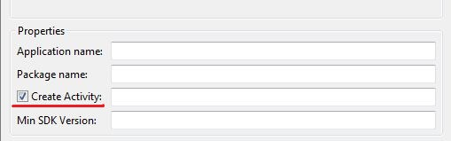
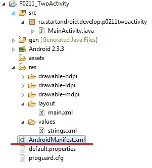
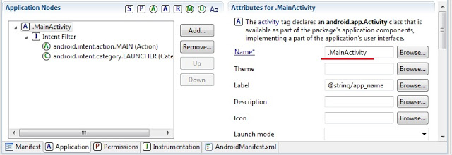
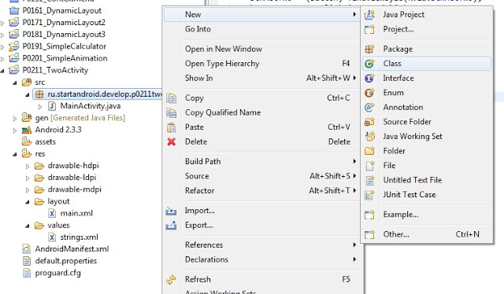
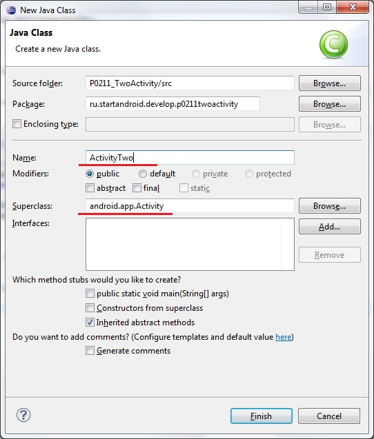
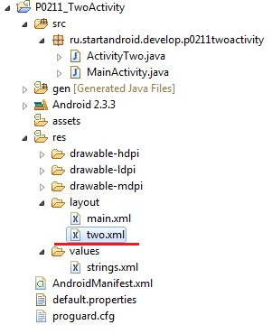
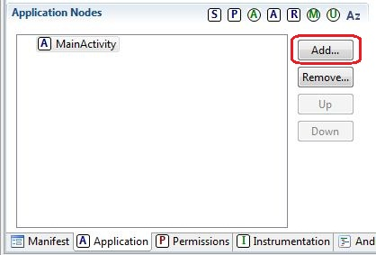
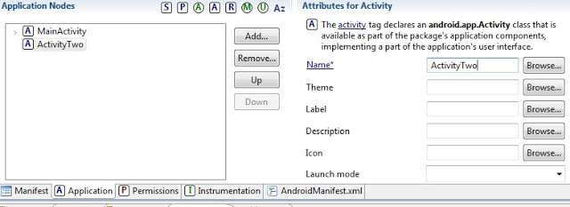
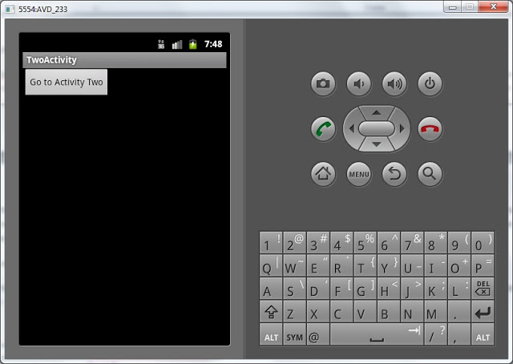
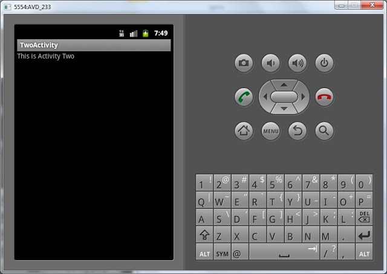

В этом уроке мы:
- создадим и вызовем второе Activity в приложении
Мы подобрались к очень интересной теме. На всех предыдущих уроках мы создавали приложения, которые содержали только один экран (Activity). Но если вы пользуетесь смартфоном с Android, то вы замечали, что экранов в приложении обычно больше. Если рассмотреть, например, почтовое приложение, то в нем есть следующие экраны: список аккаунтов, список писем, просмотр письма, создание письма, настройки и т.д. Пришла и нам пора научиться создавать многоэкранные приложения.
Создадим проект:
Project name: P0211_TwoActivity
Build Target: Android 4.0
Application name: TwoActivity
Package name: ru.startandroid.develop.p0211twoactivity
Create Activity: MainActivity
Откроем main.xml и создадим такой экран:
<?xml version="1.0" encoding="utf-8"?>
<LinearLayout
xmlns:android="http://schemas.android.com/apk/res/android"
android:orientation="vertical"
android:layout_width="fill_parent"
android:layout_height="fill_parent">
<Button
android:layout_width="wrap_content"
android:layout_height="wrap_content"
android:text="Go to Activity Two"
android:id="@+id/btnActTwo">
</Button>
</LinearLayout>На экране одна кнопка, по нажатию которой будем вызывать второй экран.
Открываем MainActivity.java и пишем код:
package ru.startandroid.develop.p0211twoactivity;
import android.app.Activity;
import android.os.Bundle;
import android.view.View;
import android.view.View.OnClickListener;
import android.widget.Button;
public class MainActivity extends Activity implements OnClickListener {
Button btnActTwo;
/** Called when the activity is first created. */
@Override
public void onCreate(Bundle savedInstanceState) {
super.onCreate(savedInstanceState);
setContentView(R.layout.main);
btnActTwo = (Button) findViewById(R.id.btnActTwo);
btnActTwo.setOnClickListener(this);
}
@Override
public void onClick(View v) {
switch (v.getId()) {
case R.id.btnActTwo:
// TODO Call second activity
break;
default:
break;
}
}
}Мы определили кнопку btnActTwo и присвоили ей Activity в качестве обработчика. Реализация метода onClick для кнопки пока заполнена частично - определяем, какая кнопка была нажата. Чуть позже здесь мы будем вызывать второй экран. Но сначала этот второй экран надо создать.
Если помните, при создании проекта у нас по умолчанию создается Activity.

От нас требуется только указать имя этого Activity – обычно мы пишем здесь MainActivity. Давайте разбираться, что при этом происходит. Мы уже знаем, что создается одноименный класс MainActivity.java – который отвечает за поведение Activity. Но, кроме этого, Activity «регистрируется» в системе с помощью манифест-файла - AndroidManifest.xml.

Давайте откроем этот файл:

Нас интересует вкладка Application. Слева мы видим MainActivity. Если его раскрыть, внутри видим Intent Filter с определенными параметрами. Пока мы не знаем что это и зачем, сейчас нам это не нужно. Забегая вперед, скажу, что android.intent.action.MAIN показывает системе, что Activity является основной и будет первой отображаться при запуске приложения. А android.intent.category.LAUNCHER означает, что приложение будет отображено в общем списке приложений Android.
Справа в поле Name написано .MainActivity. Это имя класса, который отвечает за работу Activity (это же можно считать и именем Activity).
Итак, если мы хотим создать еще одно Activity, надо создать класс и прописать Activity в AndroidManifest.xml. Чтобы создать класс, жмем правой кнопкой на package ru.startandroid.develop.p0201twoactivity в папке проекта и выбираем New -> Class.

В появившемся окне вводим имя класса – ActivityTwo, и суперкласс – android.app.Activity.

Класс ActivityTwo создан. Он абсолютно пустой. Нам надо реализовать метод onCreate, который вызывается при создании Activity:
package ru.startandroid.develop.p0211twoactivity;
import android.app.Activity;
import android.os.Bundle;
public class ActivityTwo extends Activity {
@Override
protected void onCreate(Bundle savedInstanceState) {
super.onCreate(savedInstanceState);
}
}Не хватает вызова метода setContentView, который указал бы классу, чем заполнять экран. Этому методу на вход требуется layout-файл. Давайте создадим его в папке layout, там же где и main.xml. Назовем файл two.xml

Заполним этот файл следующим кодом:
<?xml version="1.0" encoding="utf-8"?>
<LinearLayout
xmlns:android="http://schemas.android.com/apk/res/android"
android:orientation="vertical"
android:layout_width="match_parent"
android:layout_height="match_parent">
<TextView
android:id="@+id/textView1"
android:layout_width="wrap_content"
android:layout_height="wrap_content"
android:text="This is Activity Two">
</TextView>
</LinearLayout>Экран будет отображать TextView с текстом "This is Activity Two". Используем файл two.xml в методе setContentView в ActivityTwo.java
protected void onCreate(Bundle savedInstanceState) {
super.onCreate(savedInstanceState);
setContentView(R.layout.two);
}(добавляете только строку 3)
Сохраните все. Класс ActivityTwo готов, при создании он выведет на экран то, что мы настроили в layout-файле two.xml. Теперь надо прописать Activity в манифесте. Открываем AndroidManifest.xml, вкладка Application. Жмем кнопку Add.

Далее, в появившемся окне сверху выберите пункт «Create a new element at the top level …» (если есть выбор) , а из списка выбираем Activity.

Жмем OK, Activity создалось и появилось в списке. Осталось указать ему класс, который будет отвечать за его работу. Справа в поле Name можем написать вручную имя класса, который создавали – "ActivityTwo". А можем нажать Browse и выбрать его же из списка (надо будет немного подождать пока список сформируется). Кроме этого больше ничего указывать и заполнять пока не надо. Сохраним все.
Теперь в манифесте прописаны два Activity, и каждое ссылается на свой класс.

Нам осталось вернуться в MainActivity.java и довершить реализацию метода onClick (нажатие кнопки), а именно - прописать вызов ActivityTwo. Открываем MainActivity.java и добавляем строки:
case R.id.btnActTwo:
Intent intent = new Intent(this, ActivityTwo.class);
startActivity(intent);
break;(добавляете только строки 2 и 3)
Обновите импорт (CTRL+SHIFT+O), сохраните все и можем всю эту конструкцию запускать. При запуске появляется MainActivity

Нажимаем на кнопку и переходим на ActivityTwo

Код вызова Activity пока не объясняю и теорией не гружу, урок и так получился сложным. Получилось много текста и скриншотов, но на самом деле процедура минутная. Поначалу, возможно, будет непонятно, но постепенно втянемся. Создадим штук 5-6 новых Activity в разных проектах и тема уляжется в голове.
Пока попробуйте несколько раз пройти мысленно эту цепочку действий и усвоить, что для создания Activity необходимо создать класс (который наследует android.app.Activity) и создать соответствующую запись в манифест-файле.